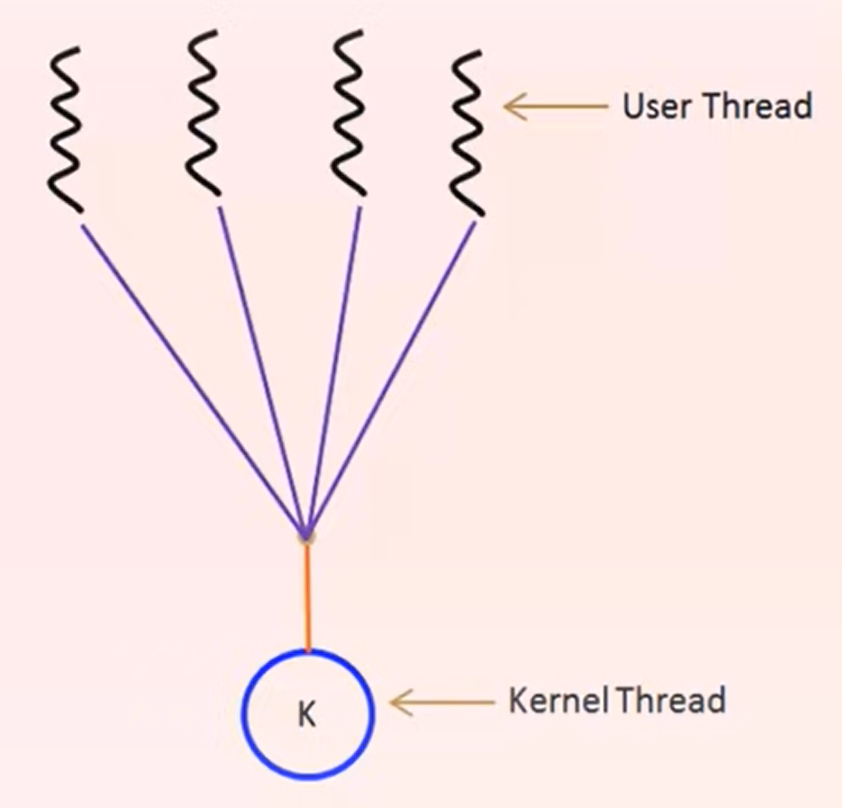

Main two types of threads:- User thread - supported above the kernel and managed without kernel support.
- Kernel thread- supported and managed directly by the OS.
There must exist a relationship between the user and the kernel threads.
There are 3 main models to establish the relationship:
- Many to One Model
- Many user threads assosiate to one kernel thread.
- Thread management is done by thread library in user space.
- Limitations:
- The entire process will block if a thread makes a blocking system call.
- Because only one thread can access the kernel at any givien time, multiplie threads are unable to run parallel on multiprocessors.

- One to One Model
- One user thread is mapped to exacly one kernel thread.
- Allows other threads to run while one makes a system call.
- Allows parallel running on multiprocessor.
- Limitations:
- Creating a kernel thread over every user thread (costly).
- Most implementations of this model restrict the number of kernel threads that may be created.

- One to Many Model - the most common model.
- Multiplexes many user-threads to a smaller or equal number of kernel-threads.
- No limitation to the number of user-threads. The corresponding kernel-threads can run parrallel.
- When a thread preforms a blocking system call, the kernel can schedule another thread for execution.